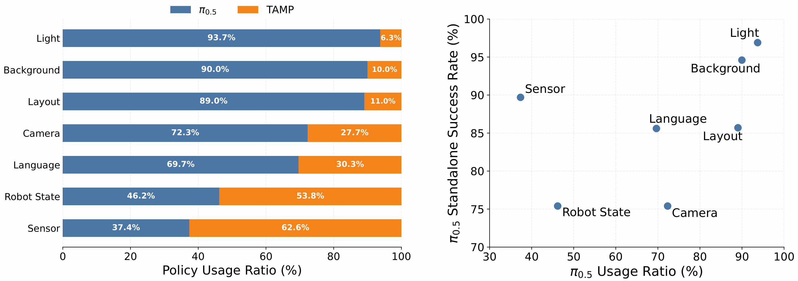
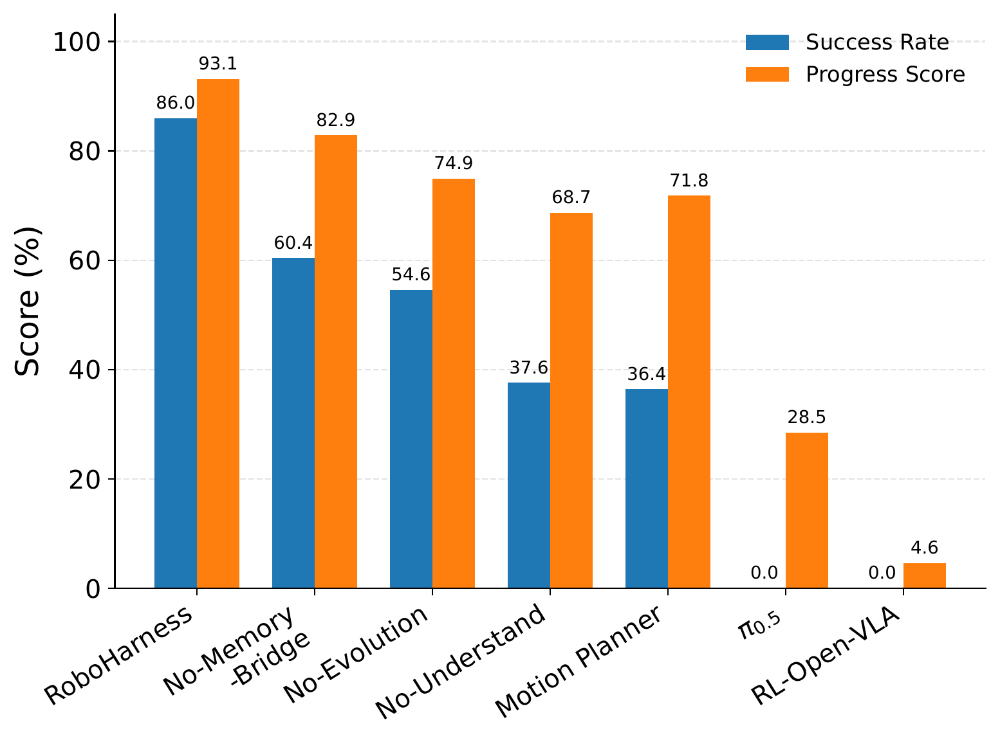
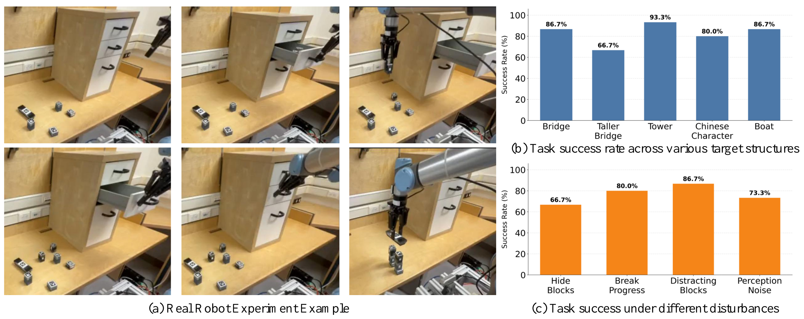

Embodied AI is in the midst of a race to expand model capabilities. VLA models continue to scale up parameters and training data; WAMs seek to improve decision-making by predicting future outcomes; RL strengthens specific behaviors through post-training; and TAMP relies on logical and geometric constraints for precise planning… Each approach is trying to answer the same question: how can we make robots more intelligent and more general?
具身智能正在经历一场模型能力竞赛。VLA 不断扩展参数规模和训练数据，WAM 尝试通过预测未来辅助决策，RL 用后训练强化特定行为，TAMP 则依靠逻辑与几何约束完成精确规划。每条路线都在回答同一个问题：怎样让机器人更聪明、更通用？
Yet in the real world, one fact is becoming increasingly clear: no single policy excels simultaneously at semantic understanding, closed-loop control, geometric precision, long-horizon reasoning, and out-of-distribution robustness. A "universal embodied model" remains an inspiring aspiration rather than an engineering reality that can be deployed today.
但走进真实世界后，一个越来越明显的事实是：没有任何一种策略能在语义理解、闭环控制、几何精度、长时序推理和分布外鲁棒性上同时占优。所谓"万能具身模型"，更像一个令人向往的目标，而不是今天可以直接部署的工程现实。
See It In Action 先看效果
Long-horizon rollouts of RoboHarness orchestrating heterogeneous policies — decomposing an instruction, routing each subtask to the right policy, and bridging every handoff.
RoboHarness 编排异构策略完成长时序任务：分解指令、将每个子任务路由给最合适的策略，并在每次交接处生成桥接。
The Universal Embodied Model Is Compelling — but How Far Away Is It? 万能具身模型很诱人，但我们离它到底有多远？
A universal embodied model sounds ideal, but it remains far from reality, at least for the foreseeable future. Complex tasks require semantic understanding, logical reasoning, geometric planning, closed-loop control, and failure recovery at the same time. These capabilities not only demand enormous datasets spanning diverse environments and robot embodiments, but also involve different — and sometimes conflicting — training objectives and execution mechanisms. A vast gap remains between achieving breakthroughs in each capability separately and enabling a single model to sustain all of them reliably over long periods in open-world environments.
万能具身模型听起来很美好，但至少在可预见的阶段，它离现实仍然遥远。复杂任务同时要求语义理解、逻辑推理、几何规划、闭环控制与异常恢复。这些能力不仅需要覆盖不同场景和机器人本体的海量数据，还对应不同的训练目标与执行机制，彼此之间甚至存在冲突。从各项能力分别取得突破，到由单一模型在开放环境中长期、稳定地兼顾所有能力，仍横亘着一道巨大鸿沟。
This is why we chose heterogeneous policy orchestration. Instead of waiting for an all-powerful model, we can enable today's specialized policies to work together and invoke the most appropriate capability at the right moment.
这正是我们选择异构策略编排的原因：与其等待一个无所不能的模型，不如让各有所长的现有策略协同工作，在正确的时机调用最合适的能力。
| VLA | Excels at visual-semantic understanding, open-vocabulary instruction following, and end-to-end action generation, but remains limited in long-horizon consistency.擅长视觉语义理解、开放词汇指令跟随和端到端动作生成，但长时序一致性仍有限。 |
|---|---|
| RL PolicyRL 策略 | Can develop robust closed-loop behaviors within a specific training distribution, but is prone to failure under environmental changes and task transfer.能够在特定训练分布内形成稳定闭环行为，但面对环境变化与任务迁移时容易失效。 |
| TAMP | Excels at symbolic reasoning, geometric constraints, and precise manipulation, but is limited by predefined abstractions, skill sets, and state representations.擅长符号推理、几何约束和精确操作，却受限于预定义抽象、技能集合与状态表示。 |
| WAM | Supports planning by predicting future states or action outcomes, but is computationally expensive and struggles with long-horizon reasoning.通过预测未来状态或动作后果辅助规划，但时间成本高，难以处理长序推理。 |
| … | … |
From Model Competition to Heterogeneous Policy Orchestration 从模型竞争，走向异构策略编排
This is the premise behind RoboHarness. If no policy today can reliably cover all the capabilities required by complex, long-horizon tasks, why not first enable existing policies — with their distinct strengths — to collaborate effectively? RoboHarness neither abandons the long-term goal of a universal embodied model nor retreats to a traditional modular system built around handcrafted rules. Instead, it identifies the capability boundaries of different policies in the current context and turns their complementary strengths into end-to-end task execution that surpasses any single policy.
这正是 RoboHarness 的出发点：既然今天还没有一个策略能够稳定覆盖复杂长时序任务所需的全部能力，为什么不先让已经存在、各有所长的策略真正协同起来？RoboHarness 并非抛开万能具身模型的长期目标，也不是用传统模块化系统退回手工规则；相反，它通过识别不同策略在当前上下文中的能力边界，将互补能力转化为超越单一策略的完整任务执行。
To achieve this, RoboHarness wraps independently developed control systems — including VLA, RL policies, and TAMP — as callable agentic skills. It selects policies dynamically according to the task and environment, reroutes when a policy fails or execution conditions change, and generates bridge trajectories when the state distributions of adjacent policies are incompatible. RoboHarness is policy-agnostic by design: its underlying policies need not share a model architecture, action space, or training data, and they do not require joint retraining. More capable VLA and WAM models, navigation policies, and other future systems can therefore be integrated directly as new capability modules.
为此，RoboHarness 将 VLA、RL policy、TAMP 等独立开发的控制系统封装为可调用的 agentic skills，根据任务与环境动态选择策略，在策略失效或执行条件变化时重新路由，并在相邻策略的状态分布不兼容时生成桥接轨迹。RoboHarness 在设计上与具体策略无关（policy-agnostic），不要求底层策略共享模型结构、动作空间或训练数据，也无需重新联合训练。因此，未来更强的 VLA、WAM、导航策略等都可以作为新的能力模块直接接入。

The coding agent in RoboHarness is responsible for high-level planning and policy routing, but it does not rely solely on a language model to make implicit judgments from raw inputs. Instead, three categories of auxiliary skills provide structured evidence for decision-making. Understanding Skills analyze images and language, converting raw inputs such as task instructions and visual observations into policy-relevant quantitative signals, including embedding similarity, pose uncertainty, and image exposure — signals that are difficult for a coding agent to obtain directly and reliably, yet crucial for sound decisions. Memory Skills retrieve and update historical execution experience, while the Memory Bridge resolves state-distribution mismatches between heterogeneous policies to enable reliable handoffs. Evolution Skills use online feedback to update policy metadata, system parameters, and orchestration logic.
RoboHarness 中的 coding agent 承担高层规划与策略路由，但其决策并非仅依赖语言模型对原始输入进行隐式判断。系统通过三类辅助技能提供结构化的决策依据：Understanding Skills 负责图像与语言分析，将任务指令、视觉观测等原始输入转化为与策略选择相关的量化信息，例如 embedding 相似度、位姿不确定性和图像曝光度等，这些信息通常难以由 coding agent 直接、可靠地获取，但对决策至关重要；Memory Skills 检索并更新历史执行经验，并通过 Memory Bridge 处理异构策略之间的状态分布不匹配，实现稳定交接；Evolution Skills 则利用在线反馈更新策略元数据、系统参数与编排逻辑。
Step 1 · Identify Dynamic Policy Capability Boundaries 第一步 · 识别策略的动态能力边界
A policy's capability is not a fixed label. The same VLA may remain robust to changes in lighting yet degrade rapidly when the camera viewpoint, initial robot state, or sensor noise changes. The question the system must answer is not simply, "Has this model performed this type of task before?" but rather, "Is it still suitable under the current task, scene, observation quality, and robot state?"
策略能力不是一个固定标签。同一个 VLA 可能在光照变化下依旧稳定，却在相机视角、初始机器人状态或传感器噪声发生变化时迅速退化。因此，系统需要判断的不是"这个模型是否做过这类任务"，而是"在当前任务、场景、观测质量和机器人状态下，它是否仍然适合执行"。
RoboHarness uses Understanding Skills to interpret raw inputs across multiple dimensions — semantics, vision, robot state, and input quality — and combines the resulting quantitative metrics for policy routing. Policy selection can therefore adapt dynamically as task states and execution conditions evolve.
RoboHarness 通过 Understanding Skills 从语义、视觉、机器人状态和输入质量等多个维度解析原始输入，并将得到的量化指标共同用于策略路由，使策略选择能够随任务状态和执行条件动态调整。

Table 1 | Success rates on LIBERO and LIBERO-Plus (%) 表 1 | LIBERO 与 LIBERO-Plus 成功率（%）
| Model模型 | Original原始 | Robot State机器人状态 | Language语言 | Layout布局 | Background背景 | Sensor传感器 | Camera相机 | Light光照 | Average平均 |
|---|---|---|---|---|---|---|---|---|---|
| RoboHarness (Ours) | 98.7 | 90.4 | 97.0 | 86.8 | 97.1 | 90.3 | 87.6 | 97.4 | 93.2 |
| π0.5 | 96.9 | 75.4 | 85.6 | 85.7 | 94.6 | 89.7 | 75.4 | 96.9 | 85.7 |
| π0 | 94.2 | 61.0 | 63.5 | 76.4 | 79.0 | 80.1 | 61.0 | 85.0 | 53.6 |
| UniVLA | 95.2 | 46.2 | 77.6 | 31.9 | 81.0 | 21.2 | 1.8 | 69.0 | 42.9 |
| OpenVLA-OFT | 97.6 | 21.7 | 81.0 | 68.7 | 91.0 | 78.6 | 55.6 | 92.7 | 67.9 |
| X-VLA | 98.1 | 89.7 | 75.7 | 71.8 | 96.0 | 62.7 | 23.4 | 88.2 | 71.4 |
| Cosmos-Policy | 98.5 | 63.3 | 81.7 | 82.2 | 88.9 | 92.7 | 75.8 | 96.5 | 82.2 |
| FAST-WAM | 97.6 | 44.5 | 68.9 | 60.7 | 53.7 | 37.7 | 16.4 | 78.2 | 51.5 |
| LingBot-VA | 98.5 | 83.0 | 86.4 | 76.2 | 53.1 | 64.4 | 40.9 | 82.3 | 69.5 |
Experiments in which RoboHarness coordinates π0.5 and TAMP as its underlying policies make one point especially clear: the most suitable policy is not fixed. Under lighting and background changes, π0.5 remains relatively robust and is therefore invoked more often. Under changes to robot state or language, and under sensor noise, the system relies more heavily on TAMP. More broadly, the VLA invocation ratio is positively correlated with its standalone performance under the corresponding perturbation: the more reliably π0.5 handles a condition, the more often RoboHarness invokes it; otherwise, more subtasks are routed to TAMP. This demonstrates that dynamic routing can adapt to a policy's actual reliability in the current environment. Sensor Noise is the main outlier because it directly degrades image quality, making it difficult for Understanding Skills to extract scene information and assess policy applicability reliably; its invocation ratio therefore deviates from the overall relationship with standalone performance.
在 RoboHarness 协同调用 π0.5 和 TAMP 作为底层策略的实验中，结果直观说明，最合适的策略并非固定不变。光照与背景变化下，π0.5 仍保持较强鲁棒性，因此调用比例更高；在机器人状态、语言变化，和传感器噪声等条件下，系统则更多依赖 TAMP。进一步来看，VLA 的调用比例与其相应扰动下的独立表现总体呈正相关：π0.5 越能稳定应对某类扰动，RoboHarness 就越倾向于调用它；反之，则将更多子任务路由给 TAMP。这表明动态路由能够根据策略在当前环境中的实际可靠性调整决策。Sensor Noise 是其中的主要离群点，因为它直接降低了输入图像质量，使 Understanding Skills 难以可靠提取场景信息并判断策略适用性，导致调用比例与独立性能偏离整体趋势。
Step 2 · Bridge the Handoff Gap Between Heterogeneous Policies 第二步 · 解决异构策略之间的"交接断层"
Choosing the right policy is not enough. Two independently trained or designed policies often have different input requirements, action representations, and state distributions. The terminal state of one may fall precisely in a region that the next policy has never encountered and from which it cannot start reliably. A direct transfer of control can amplify a local distribution shift into a cascading failure over a long-horizon task.
选对策略还不够。两个独立训练或设计的策略通常拥有不同的输入要求、动作表示与状态分布。前一个策略的终止状态，可能恰好落在下一个策略从未见过、无法稳定启动的位置。直接切换控制权，便会把一次局部分布偏移放大成长时序任务中的级联失败。
RoboHarness addresses this problem with the Memory Bridge. Given the next subtask and the current observation, the system first uses text and visual similarity to retrieve the top-K successful trajectories of the target policy from multimodal memory. It then expands forward and backward along those trajectories to extract robot states such as end-effector poses and joint angles. Next, the Memory Bridge assigns supervision signals according to each state's relative progress through the trajectory and uses online regression to fit a local robot-state–execution-progress distribution in real time. This reconstructs the target policy's in-distribution state region and allows the system to assess whether the current state is compatible with it.
RoboHarness 为此提出 Memory Bridge。系统首先根据下一子任务和当前观测，通过文本与视觉相似度从多模态记忆中检索 Top-K 条目标策略的成功轨迹，并沿轨迹前后扩展，提取末端执行器位姿、关节角度等机器人状态。随后，Memory Bridge 根据各状态在轨迹中的相对进程赋予监督信号，通过 online regression 实时拟合局部的"机器人状态—执行进程"分布，从而重建目标策略的分布内状态区域，并评估当前状态与该区域的兼容程度。
The system then samples and scores candidate robot states, jointly considering in-distribution confidence and motion cost. It selects a target state from which the next policy can reliably take over and generates a corresponding bridge trajectory. Control is transferred only after the robot reaches that state. By learning a policy's applicable state distribution online from historical execution data, the Memory Bridge can be used as a plug-and-play component with arbitrary robot control policies. It requires neither modifications to the underlying policies nor joint training across policies.
在此基础上，系统对候选机器人状态进行采样和评分，综合考虑分布内置信度与 motion cost，选择适合下一策略接管的目标状态，并生成相应的桥接轨迹。机器人到达该状态后，再将控制权交给下一策略。Memory Bridge 利用历史执行数据在线学习策略的适用状态分布，对任意机器人控制策略都可以即插即用，无需修改底层策略，也不需要对多个策略进行联合训练。

Long-Horizon Tasks Expose the Real Limitations of a Single Model 长时序任务揭示了单一模型的真正短板
In ordinary short-horizon tasks, the capability boundaries of a single policy are easy to overlook: one successful grasp or placement may be enough to complete the task. When the horizon grows and subtasks become interdependent, however, a single missing capability or unstable handoff can cause the end-to-end success rate to collapse. On LIBERO-LoHo, whose tasks are roughly four times longer than those in the original LIBERO benchmark, a single VLA can complete some subtasks but can rarely finish the full sequence. π0.5 achieves an average task progress of 55.3% but a full success rate of only 6.4%, while several other standalone policies achieve 0% full success. Even with a hierarchical architecture, the best-performing baseline, H-WM-π0.5, reaches only 64.8% full success, showing that high-level task decomposition alone cannot compensate for missing low-level capabilities or incompatible intermediate states. Through capability-aware routing and reliable handoffs, RoboHarness raises average task progress to 97.5% and full success to 95.2%.
在普通短任务上，单一策略的能力边界往往不容易暴露：只要完成一次抓取或放置，任务就算成功。但当任务长度扩大、子任务互相依赖时，一个环节的能力缺失或一次不稳定交接，都会让完整成功率快速下降。在约为原始 LIBERO 四倍长度的 LIBERO-LoHo 上，单一 VLA 能完成部分子任务，却几乎无法完整走完长时序流程。π0.5 的平均任务进度达到 55.3%，完整成功率却只有 6.4%；多种其他单一策略的完整成功率为 0。即使采用分层架构，表现最好的 H-WM-π0.5 也只取得 64.8% 的完整成功，说明高层任务分解仍无法弥补底层能力缺失与中间状态不兼容。RoboHarness 通过能力感知路由与稳定交接，将平均任务进度提升至 97.5%，完整成功率达到 95.2%。
Table 2 | Zero-shot long-horizon evaluation on LIBERO-LoHo. RoboHarness integrates three underlying policies: π0.5, an RL-trained OpenVLA policy, and TAMP. Each entry reports task progress/success rate (%). 表 2 | LIBERO-LoHo 零样本长时序评估。RoboHarness 集成三种底层策略：π0.5、经 RL 训练的 OpenVLA 和 TAMP。各项结果为任务进度 / 完整成功率（%）。
| Method方法 | Task 1任务 1 | Task 2任务 2 | Task 3任务 3 | Task 4任务 4 | Task 5任务 5 | Average平均 |
|---|---|---|---|---|---|---|
| RoboHarness (Ours) | 100.0 / 100.0 | 97.3 / 96.0 | 98.7 / 96.0 | 94.7 / 92.0 | 97.0 / 92.0 | 97.5 / 95.2 |
| H-WM-π0.5 | 98.0 / 94.0 | 86.7 / 60.0 | 74.0 / 46.0 | 70.7 / 42.0 | 95.0 / 82.0 | 84.9 / 64.8 |
| Logic-guided π0.5 | 95.3 / 86.0 | 84.7 / 58.0 | 54.7 / 16.0 | 39.3 / 4.0 | 92.0 / 78.0 | 73.2 / 48.4 |
| LLM-guided π0.5 | 84.7 / 54.0 | 80.7 / 42.0 | 68.0 / 24.0 | 41.3 / 4.0 | 59.5 / 10.0 | 66.8 / 26.8 |
| π0.5 | 66.0 / 4.0 | 73.3 / 24.0 | 54.7 / 4.0 | 44.7 / 0.0 | 38.0 / 0.0 | 55.3 / 6.4 |
| π0 | 54.0 / 0.0 | 62.0 / 28.0 | 44.0 / 0.0 | 31.3 / 0.0 | 34.0 / 0.0 | 45.1 / 5.6 |
| X-VLA | 48.8 / 0.0 | 16.7 / 0.0 | 23.3 / 0.0 | 33.3 / 0.0 | 40.0 / 0.0 | 32.4 / 0.0 |
| GR00T-N1.5 | 0.0 / 0.0 | 30.7 / 0.0 | 34.7 / 0.0 | 2.7 / 0.0 | 0.0 / 0.0 | 13.6 / 0.0 |
| OpenVLA-OFT | 0.0 / 0.0 | 60.0 / 0.0 | 17.3 / 0.0 | 22.7 / 0.0 | 0.0 / 0.0 | 20.0 / 0.0 |
| OpenVLA | 0.0 / 0.0 | 2.7 / 0.0 | 24.0 / 0.0 | 2.7 / 0.0 | 0.0 / 0.0 | 5.9 / 0.0 |
Simply Connecting Policies Is Not Enough 不是"串起来"就够了
The value of heterogeneous policy coordination does not come from merely adding more models. Without Understanding Skills, task-interpretation errors propagate into task decomposition and policy selection, showing that reliable routing begins with accurate analysis of the task, scene, and input quality. Without Evolution Skills, the system struggles to use new experience to revise its estimates of policy capability boundaries and can repeat the same routing errors under unfamiliar conditions. Without the Memory Bridge, task progress remains relatively high, but full success falls from 86.0% to 60.4% — in other words, the system often selects the correct policy but still fails because the handoff state is incompatible. These three ablations correspond to understanding, adaptation, and handoff — distinct and indispensable elements of heterogeneous policy coordination.
异构策略协同的价值，并不来自简单增加模型数量。移除 Understanding Skills 后，任务理解错误会进一步传播至任务分解与策略选择，说明可靠路由首先依赖对任务、场景和输入质量的准确解析；移除 Evolution Skills 后，系统难以利用新经验修正策略能力边界，容易在陌生条件下重复相同的路由错误；移除 Memory Bridge 后，任务进度仍然较高，但完整成功率从 86.0% 降至 60.4%，说明系统虽然选对了策略，却经常因交接状态不兼容而无法完成任务。三项消融分别对应理解、适应与交接，是异构策略协同中相互独立且缺一不可的环节。

From Simulation to Real Robots 从仿真走向真实机器人
The real-robot experiments turn "policy specialization" into an observable execution process. Given a language instruction, the system must plan a target structure, identify which blocks are missing, invoke the VLA to open the cabinet and retrieve the required objects, and then transfer control to TAMP for precise assembly. If blocks are hidden again, a partially completed structure is dismantled, pose estimates are perturbed, or distractor objects are introduced, the system must reassess task progress, update its plan, and recover execution.
真实机器人实验进一步把"策略分工"变成了可观察的执行过程。系统需要根据语言指令规划目标结构，判断哪些积木缺失，调用 VLA 打开柜门并取出目标物体，再把控制权交给 TAMP 完成精确搭建。遇到积木再次被藏起、半成品被拆除、位姿估计受扰或场景中加入干扰物时，系统还需要重新评估任务进度、更新计划并恢复执行。

These experiments do not show that any underlying model has suddenly acquired every capability. Rather, they demonstrate that the system can identify which capability is currently missing, reroute between policies, and continue execution without restarting the entire task.
这些实验验证的并不是某个底层模型突然获得了全部能力，而是系统能够识别当前缺少哪种能力，在策略之间重新路由，并在不中断整个任务的前提下继续执行。
The Competition in Embodied AI Is Shifting from Models to Systems 具身智能的竞争，正在从模型走向系统
The universal embodied model remains worth pursuing. Before it truly arrives, however, robots must confront real capability boundaries: every policy has tasks at which it excels, input conditions on which it depends, and out-of-distribution regions in which it is fragile. Ignoring these boundaries and pursuing ever-larger unified models alone may not be the shortest path to solving complex real-world tasks.
"万能具身模型"仍然值得探索，但在其真正到来之前，机器人必须面对现实的能力边界：每种策略都有擅长的任务、依赖的输入条件和脆弱的分布外区域。忽视这些边界，一味追求更大的统一模型，未必是解决复杂真实任务的最短路径。
Heterogeneous policy orchestration offers a more practical path forward. It does not require one model to master every capability immediately. Instead, it enables the system to understand when different policies are reliable, how they should divide the work, where control should be handed off, and how failures should update future decisions. While creating system-level capabilities that surpass those of any individual policy, orchestration also accumulates cross-capability, long-horizon data that a single model would struggle to generate independently — data that can, in turn, support the training of more unified embodied models. Heterogeneous policy orchestration is therefore not the opposite of the universal model; it is a practical route toward it.
异构策略编排提供了一条更现实的演进路径：不要求单一模型立即掌握所有能力，而是让系统理解不同策略何时可靠、如何分工、在哪里交接，以及怎样从失败中更新判断。在形成超越单一策略的系统能力的同时，编排过程还能积累单个模型难以独立产生的跨能力、长时序数据，进一步反哺统一具身模型的训练。异构策略编排并非万能模型的对立面，而是推动具身智能向万能模型演进的一条现实路径。
Paper & Resources 论文与资源
RoboHarness: Memory-Driven Orchestration of Heterogeneous Robot Policies for Long-Horizon Planning
Jinbang Huang, Yuanzhao Hu, Zhiyuan Li, Ran Qi, Yixin Xiao, Zhanguang Zhang, Mark Coates, Tongtong Cao, Yingxue Zhang
Huawei Noah's Ark Lab · University of British Columbia · University of Toronto · McGill University · Department of Foundation Model, 2012 Labs
Citation引用
@misc{huang2026roboharness,
title = {RoboHarness: Memory-Driven Orchestration of Heterogeneous Robot Policies for Long-Horizon Planning},
author = {Huang, Jinbang and Hu, Yuanzhao and Li, Zhiyuan and Qi, Ran and Xiao, Yixin and Zhang, Zhanguang and Coates, Mark and Cao, Tongtong and Zhang, Yingxue},
year = {2026},
eprint = {2607.18060},
archivePrefix = {arXiv}
}